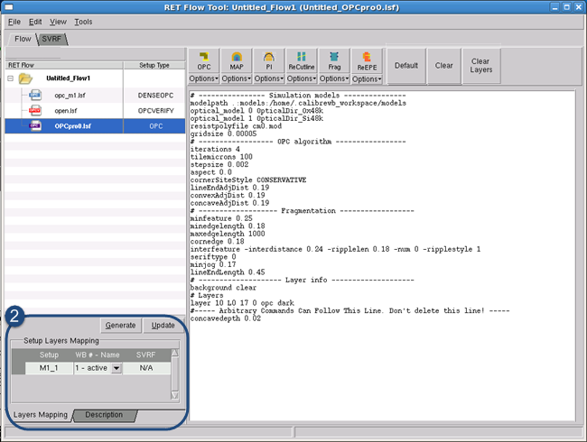
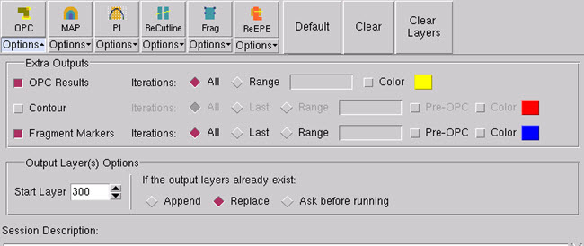

A Calibre OPCpro
session must be correctly loaded and configured before you can use
it to perform OPC. Calibre OPCpro sessions show in the RET Flow
Tool pane as session type OPC.
Procedure
- Follow the steps in “Creating a Session” to create a Calibre OPCpro session.
If you used one of the
methods that loaded an existing file, your RET Flow Tool should
look similar to Figure 1.
If the session text entry
pane is empty, you can:
Use the Copy and Paste options from the Edit menu .
Open the right-mouse context
menu inside the text pane to copy directly from a Calibre OPCpro
rule file.
Right-click the OPCpro
session in the RET Flow tree and choose Open
Setup.
Figure 1. RET Flow Tool, Calibre
OPCpro Session
- Assign layers in the Setup
Layers Mapping list from the WB # - Name list to the listed layer
outputs from the Calibre OPCpro file.
If you leave a layer set
as Dummy Layer, it is considered to be hidden. Only layers assigned
from the list are considered visible.
If layers are incorrectly
mapped, running Calibre OPCpro may give unexpected results.
- Under the OPC button, click Options to open the Output
Options panel. Select checkboxes as needed.
OPC Results —
Outputs the resulting OPC edge movements for the specified iterations.
This is useful to track how edges move during OPC. It generates
one consecutive output layer per iteration.
Contour —
Outputs a contour based on the EPE measurements for the specified iterations.
It generates one output layer per iteration. Selecting Pre-OPC includes pre-OPC
contour information in the output.
Fragment Markers —
Outputs fragmentation information such as final EPE, position, length,
type, feedback, displacement, target (goal) position, and the metric used
to measure the EPE. It generates one consecutive output layer per
iteration. This is required if you want to view fragmentation information
in the post-OPC analysis phase. Selecting Pre-OPC includes pre-OPC
fragment information in the output.
Color —
Changes the color of the output type.
Figure 2. OPCpro OPC Options
- Test Calibre OPCpro by clicking
the OPC button.
Results
Calibre OPCpro runs the script, and
one or more OPC result layers are added to the active layout in
the viewer main window.